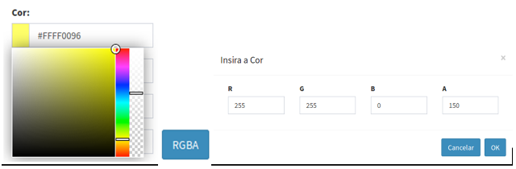

Adicionar Visualização
ADICIONANDO UMA VISUALIZAÇÃO:
Para adicionar uma nova visualização é necessário ter um projeto ativo. No menu de opções selecione “ Visualizações” para que a lista de visualizações disponíveis seja apresentada na área de trabalho. Clique no botão “ + ” para adicionar uma nova visualização. Utilize o botão “Salvar” para salvar a visualização. Utilize o botão “Salvar e executar” para salvar a visualização e executar a publicação imediatamente, independente de algum agendamento. Não é permitido nomes de visualizações em duplicidade. Botão “Cancelar” volta à tela anterior sem salvar a visualização. A Figura 4.3 mostra a área de trabalho para adicionar nova visualização. Detalhes de cada campo a seguir.
Visualizações” para que a lista de visualizações disponíveis seja apresentada na área de trabalho. Clique no botão “ + ” para adicionar uma nova visualização. Utilize o botão “Salvar” para salvar a visualização. Utilize o botão “Salvar e executar” para salvar a visualização e executar a publicação imediatamente, independente de algum agendamento. Não é permitido nomes de visualizações em duplicidade. Botão “Cancelar” volta à tela anterior sem salvar a visualização. A Figura 4.3 mostra a área de trabalho para adicionar nova visualização. Detalhes de cada campo a seguir.

Figura 4.3 – Módulo de Administração: Registro de visualização.
Registro de Visualização – Dado Geral:
- Nome: Defina o nome da visualização. O tamanho máximo do nome é de 100 caracteres. Sugerimos nomes curtos pois estes serão utilizados como nome das camadas no módulo de monitoramento.
- Serviço: Escolha o serviço de visualização a ser utilizado.
- Privado: Marque esta opção para visualizações que exigirão acesso restrito a usuários no módulo de monitoramento, portanto, login e senha serão solicitados. Se opção desabilitada, a camada estará disponível no projeto correspondente.
- Descrição: Campo não obrigatório para descrição da visualização. O conteúdo deste campo estará disponível como caixa de texto explicativa da camada disponível do módulo de monitoramento.
- Ativo: Botão ativo significa que qualquer dado dinâmico ou análises que estão agendadas para serem publicadas serão atualizadas no módulo de monitoramento de forma automática ou nos horários pré-definidos. Se opção desabilitada a publicação dos dados será de forma manual, isto é, deverá clicar no botão
 Executar na lista de visualizações disponíveis (ver abaixo Executando uma Visualização).
Executar na lista de visualizações disponíveis (ver abaixo Executando uma Visualização).
Registro de Visualização - Série de Dados:
- Séries de Dados de Visualizações: Escolha o dado que deseja publicar na aplicação web de monitoramento. Todos os dados estáticos (vetoriais ou matriciais), dinâmicos (PCD, ocorrências ou matriciais), resultados de análise (por objeto monitorado, grades ou PCD) ou ainda resultado de interpolações de PCD´s estarão disponíveis. Um dado pode ser utilizado em diferentes configurações de visualizações.
- [V] Análises, [V] Dinâmico ou [V] Estático: Utilize estes botões para filtrar a lista de dados disponíveis.
Registro de Visualização - Agendamento: (se dado dinâmico ou análise)
- Tipo: Escolha tipo “Manual”, “Agendamento” ou “Automático”. Se “Manual” a visualização só será realizada se o usuário utilizar o botão Executar na lista de visualizações do item desejado ou salvar com opção de executar. Se “Agendamento” preencha os campos abaixo. Se “Automático” dependerá de coleta de um novo dado dinâmico ou análise ter sido realizada.
- Unidade de tempo (somente se Tipo for Agendamento): Escolha um item entre “Segundos, Minutos, Horas e Semanalmente”.
- Frequência (somente se Unidade de tempo for Segundos, Minutos, Horas): Digite um valor de um número inteiro ou fracionado.
- Tempo Inicial
 (somente se Unidade de tempo for Segundos, Minutos, Horas): Clique no campo para escolher o valor de hora, minuto e segundo que será utilizado como referência para executar a visualização.
(somente se Unidade de tempo for Segundos, Minutos, Horas): Clique no campo para escolher o valor de hora, minuto e segundo que será utilizado como referência para executar a visualização. - Agendamento (somente se Unidade de tempo for Semanalmente): escolha uma das opções entre “Domingo, Segunda-feira, Terça-feira, Quarta-feira, Quinta-Feira, Sexta-feira e Sábado”
- Hora (somente se Unidade de tempo for Semanalmente): clique no campo para escolher o valor de hora, minuto e segundo que será executada a visualização.
Registro de Visualização - Estilo:
Utilize os parâmetros dessa aba para definir um estilo de apresentação. Se não for definido um estilo, os seguintes padrões serão utilizados para:
- Imagem colorida RGB : utiliza a própria composição dos canais R, G e B.
- Imagem monocromática: utiliza paleta em níveis de cinza.
- Imagem colorida codificada: utiliza a própria codificação de cores.
- Grades numéricas: utiliza paleta em níveis de cinza entre o mínimo e máximo dos valores válidos.
- Tipo de criação: Escolha entre as opções: Padrão, Editor, SLD ou estilos prontos disponíveis conforme série de dados. Se série de dados no formato matricial, estarão disponíveis as opções: Dias sem chuva, Precipitação, Umidade, Risco de fogo, Temperatura (Kelvin), Temperatura (Celsius) e Vento. Se série de dados no formato vetorial, estarão disponíveis as opções: Estados, Biomas, Unidades de Conservação, Municípios e Países. Os estilos disponíveis para os dados de formato vetorial são os mesmos utilizados no banco de dados do programa Queimadas do INPE.
- Editor: Permite ao usuário personalizar o estilo da visualização de acordo com a escolha do Tipo e Atributo do dado (quando formato tabela com feições).
- Tipo: Escolha entre as opções Gradiente, Intervalo e Valor. A opção Gradiente estará disponível somente para formato matricial.
- Gradiente (somente se Tipo for Gradiente): Utiliza uma sequência de tons contínuos entre duas cores ou mais, formando uma transição suave entre as cores escolhidas.
- Valor: Utilize essa opção para inserir camadas manualmente à legenda.
- Intervalo: As cores são associadas a diferentes intervalos de valores. É necessário indicar o valor inicial, valor final e a número de intervalos. Na Figura 4.4 é mostrado um exemplo do preenchimento dos dados para o tipo Intervalo.
- Número da banda (somente se formato matricial): Utilize este parâmetro, se o dado matricial possuir mais de uma banda para indicar qual banda será utilizada na visualização. A primeira banda corresponde ao número 0.
- Valor nulo (somente se formato matricial): Valor numérico que indica um dado inválido na imagem.
- Valor inicial: Deve ser inserido o valor mínimo do dado que será visualizado.
- Valor final: Deve ser inserido o valor máximo do dado que será visualizado.
- Número: Deve ser indicado número de intervalos entre cada classe representada na visualização. Nota: O número de intervalo não é igual ao número de classes.
- Precisão: Corresponde a quantidade de casas decimais a serem utilizadas.
- Única banda (somente se formato matricial): Marque essa opção se o dado matricial possuir apenas uma banda. Disponível apenas para estilos prontos de formato matricial, com exceção o estilo Tipo de criação Vento.
- Banda norte e Banda leste: (somente para o tipo de criação "Vento"). Essa variável está relacionada a direção dos ventos.
- Cor: Existem três formas para se definir uma determinada cor: 1 - utilizando código de cores. Exemplo: Amarelo = #FFFF00FF; 2 - selecionando uma cor na paleta de cores; e 3 - utilizando o sistema RGBA (Figura 4.5).
- RGBA: É a sigla para Red, Green, Blue (Vermelho, Verde, Azul) e Alpha. A proporção de cada uma dessas 3 cores juntas obtém-se uma determinada cor. O valor de cada componente (R, G e B) deve ser inteiro e variar de 0 a 255. Por exemplo, a cor amarela é representada por R-255 G-255 e B-0. A componente Alpha é o que determina a faixa de transparência da cor, também utilizam-se valores inteiros variando de 0 (completamente transparente) a 255 (completamente sólido).
- Título: Corresponde ao nome da legenda na visualização, podendo ser editado pelo usuário. Nota: O campo “Default” corresponde aos valores que estiverem acima do último nível informado. A cor correspondente a esse campo é branca e sólida, equivalente ao valor 255 em todas as componentes do RGBA: R-255, G-255, B-255, A-255.
- Valor: Corresponde aos valores do atributo, deve ser valor único, que será representado na visualização, é disponível tanto para dados de formato matricial quanto formato tabela com feições.
- Adicionar: Adiciona uma nova legenda.
- Remover: Remove uma legenda.
- SLD: É uma linguagem de marcação, chamada Styled Layer Descriptor, baseada em XML na qual especifica estilo para pontos, linhas e polígonos, bem como rasters e rótulos de texto.
- Atributo (somente se formato Tabela com Feições PostgreSQL/PostGIS): Selecione um atributo da tabela para gerar a visualização.
- Legenda automática: Essa opção estará disponível apenas se o atributo selecionado possuir no máximo 30 valores correspondentes a identificadores únicos.
As Figuras 4.4 e 4.5 mostram detalhes do estilo na edição de uma visualização.
Figura 4.4 - Exemplo de edição de estilo do tipo Intervalo.

Figura 4.5 - Exemplo da escolha da cor do item de legenda.